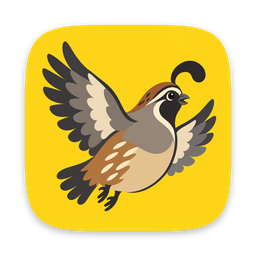
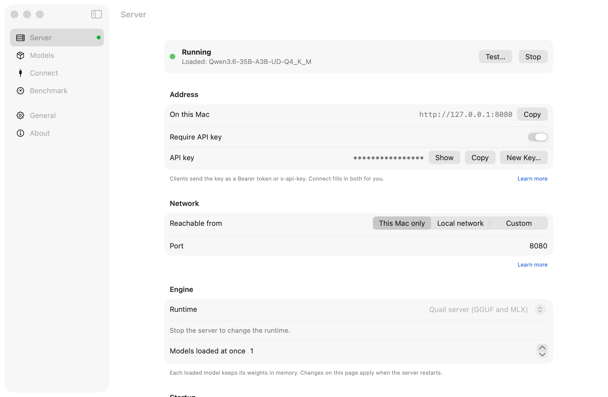

Local AI models,
one click from your tools.
Quail is a menu bar app that runs AI models on your Mac and gives Claude Code, Codex, your editor and your chat apps an OpenAI- and Anthropic-compatible endpoint. Free and open source, for Apple silicon.
brew install --cask adatoo/tap/quail-aiOr download the DMG. Needs macOS 14 Sonoma or later on Apple silicon. Signed and notarized; Quail updates itself.

Start it, point your tools at it, get on with your work.
Quail starts a model server, keeps it running, and stays out of the way in the menu bar. Everything it does happens on your Mac.
GGUF and MLX, one server
Quail server runs both formats from one model folder: llama.cpp for GGUF, Apple's MLX for MLX models. llama.cpp's own server stays bundled as a fallback.
It knows what fits
Before you download, every model gets a verdict for this Mac — Comfortable, Tight or Won't fit — and an estimated speed. Context sizes adjust to your memory.
Connect your tools
Copy-ready setup for Claude Code, Codex, opencode, Continue, Cline, Zed, Open WebUI and more, each with a Test button. Or let quail launch start the tool for you.
A command, like ollama
quail pull qwen3-8b, quail chat, quail bench, quail launch claude. It talks to the app, so the menu and the terminal always agree.
Built for Apple silicon
Several requests decoded at once, a prompt cache per conversation, and faster decoding when a reply repeats its prompt. Benchmark any model on your own Mac and compare runs.
Private by default
Prompts never leave your Mac. The server answers only this Mac until you say otherwise, an API key is on from the start, and it all works offline once models are downloaded.
Works with the tools you use
Every snippet is filled in with your address, key and model, and checked against the tool's own docs. Quail never edits another app's settings.
- Claude Code
- OpenAI Codex CLI
- opencode
- aider
- Goose
- Qwen Code
- Continue
- Cline
- Roo Code
- Zed
- Open WebUI
- LibreChat
- curl
- Python
- JavaScript
$ quail pull qwen3-8b
$ quail launch claude
$ quail chat why is the sky blueThe server speaks OpenAI Chat Completions and Responses, and Anthropic Messages, so Claude Code works too.
Models that suit your Mac
A curated list recommends what runs comfortably on your memory: Qwen3 and Qwen3.6, Qwen3-Coder, Gemma 4, gpt-oss, Llama 3.1, DeepSeek-R1 distills and more, with vision models marked. Add any GGUF from Hugging Face, choose from over a hundred MLX models, or move in the models LM Studio, llama.cpp and the Hugging Face cache already downloaded.
What it deliberately doesn't do
- A chat window of its own: open the server's chat page in your browser, or use
quail chat. - Agents, or image and audio generation.
- Anything in the cloud: no account, no telemetry.
- Edit other apps' settings: it gives you the snippet.